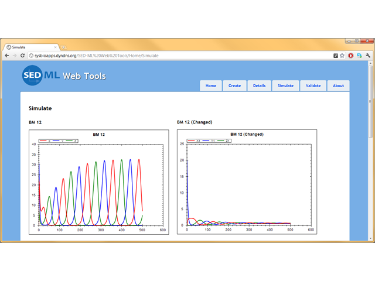
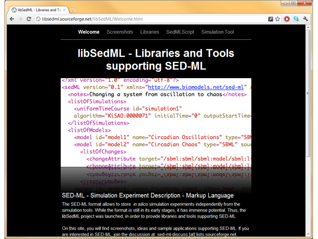
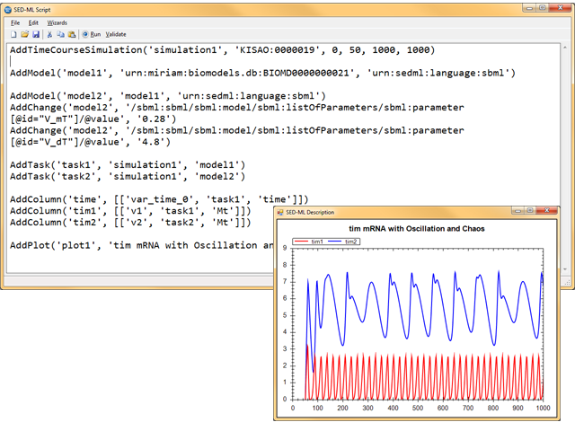

SED-ML Showcase
On this page we present a number of tools created by the SED-ML
community. If you would like your software tool to be listed here
please fill out the survey.
-

SED-ML Web Tools
The SED-ML Web Tools is an online application providing support
to edit, simulate and validate SED-ML files online. It supports
SBML
as well as CellML models.
License: BSD
-

libSedML
libSedML is a set of .NET libraries for supporting SED-ML. The
core library libSedML supports reading, validating and writing
of SED-ML descriptions, along with all necessary utility functions
for resolving models and XPath expressions. Two additional libraries
are included: libSedMLRunner, which allows to schedule and execute
simulation experiments encoded in SED-ML. A third library,
libSedMLScript, provides a script based language for defining SED-ML
experiments.
License: BSD
-

SED-ML Script Editor
The SED-ML Script Editor allows to construct SED-ML documents using a simplified script language. Starting out by directly importing SBML or CellML models an initial script is generated that can be simulated. From there it is easy to modify it to suite your needs.
License: BSD